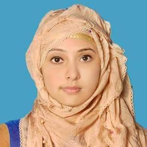

FATEMA TUZ ZOHRA
ACADEMIC BACKGROUND
- MBA(Bangladesh Islami University)
obtained CGPA: 3.4
- B.B.A(professional) National University
Bangladesh Institute of Science & Technology (BIST).
CGPA- 3 (Major-Marketing)
- H.S.C
Business Study
Bangladesh Ideal School and College
Obtained GPA-5.00 (Out of 5)
Board-Dhaka
- S.S.C
Science group
Ali Ahmed High School, Dhaka.
Obtained CGPA-4 (Out of 5)
Board-Dhaka
EMPLOYMENT HISTORY
- Present Employment
: Entrepreneur at online business
- Previous Employment: Assistant manager (MKT)
Fargo Impo & Expo Textile Co.Ltd
- Duration:3/5/2018-31/9/2019
PERSONAL DETAILS
- Address:T&T colony,Moghbazar,Dhaka-1217,House: g-8/2
- Mobile :01680394802
- Email :promipearl@gmail.com
- linkedin id: Fatema Tuz Zohra
- Father’s Name : Md. Mominul Haque
- Mothers’ Name : Shmsun Nahas
- Date of Birth : 19th July,1992
- Home District : Feni
- Nationality : Bangladeshi
- Religion : Islam